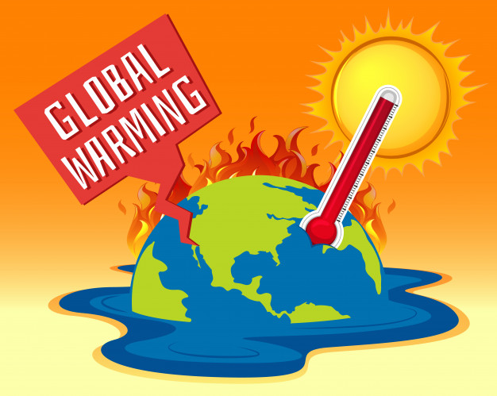

• ຜົນກະທົບຂອງພາວະໂລກຮ້ອນທີ່ອາດຈະເກີດຂື້້ນໃນໄລຍະເລີ່ມຕົ້້ນ ແລະ ໄລຍະຍາວຕໍ່ໂລກຂອງເຮົາ.

ພາວະໂລກຮ້ອນແມ່ນກໍ່ໃຫ້ເກີດອັນຕະລາຍທັງຄົນ ແລະ ລະບົບນິເວດ ສິ່ງທີ່ເຮົາເຫັນໄດ້ກໍຄືພູເຂົານ້ຳແຂງທີ່ກຳລັງລະລາຍ ຊັ້ນດິນທີ່ອຸ່ນຂື້ນ ປະກາລັງທີ່ກຳລັງຕາຍ
ລະດັບນ້ຳທະເລທີ່ເພິ່ມຂື້້ນສູງ ແລະ ລະບົບນິເວດກຳລັງປ່ຽນແປງ.
ບໍ່ແມ່ນພຽງແຕ່ນັກວິທະຍາສາດເທົ່ານັ້ນທີ່ສາມາດເຫັນເຖິງການປ່ຽນແປງເຫຼົ່ານີ້ ແຕ່ຜູ້ຄົນທີ່ອາໄສຢູ່ໃນຕອນເໜືອຂອງທະວີບອາກຕິກ ຈົນເຖິງເກາະໃກ້ເສັ້ນສູນສູດ
ແມ່ນກຳລັງໄດ້ຮັບຜົນກະທົບຈາກພາວະໂລກຮ້ອນ.
ທັງໝົດທີ່ກ່າວມານັ້ນເປັນພຽງການເລີ່ມຕົ້ນເທົ່ານັ້ນ ເຮົາກຳລັງປະສົບກັບພາວະໂລກຮ້ອນທີ່ອັນຕະລາຍ ແລະ ເຮົາຕ້ອງລົງມືເຮັດບາງຢ່າງເພື່ອຫຼີກລ້ຽງກັບອັນຕະລາຍທີ່ຈະເກີດ
ແລະ ຜົນກະທົບທີ່ຈະເກີດຂື້ນຖ້າຫາກວ່າເຮົາປ່ອຍໃຫ້ສະພາບໃນປັດຈຸບັນດຳເນີນຕໍ່ໄປ.
•ຜົນກະທົບທີ່ອາດຈະເກີດຂື້ນ ແລະ ຜົນກະທົບໃນຂັ້ນເລີ່ມຕັ້ນຈາກອຸນຫະພູມທີ່ເພີ່ມຂື້ນເລັກໜ້ອຍຈົນເຖິງປານກາງ:
1.ລະດັບນ້ຳທະເລທີ່ເພີ່ມຂື້ນສູງເນື່ອງຈາກພຸເຂົານ້ຳແຂງທີ່ກຳລັງລະລາຍ ແລະ ອຸນກະພູມທົ່ວໂລກກຳລັງສູງຂື້ນ.
2.ກາສເຮືອນແກ້ວມະຫາສານທີ່ກຳລັງຖືກປ່ອຍອອກມາຈາກທັງຊັ້ນດິນ ແລະ ປ່າທີ່ກຳລັງຕາຍ.
3.ມີຄວາມສ່ຽງຫຼາຍຂື້ນທີ່ຈະເກີດສະພາບອາກາດທີ່ຮຸນແຮງເຊັ່ນ:ຄື້ນຄວາມຮ້ອນ ໄພແຫ້ງແລ້ງ ແລະ ນ້ຳຖ້ວມ ເຊິ່ງໄພແຫ້ງແລ້ງທົ່ວໂລກໄດ້ເພີ່ມຂື້ນສູງຫຼາຍກວ່າ 30 ປີທີ່ຜ່ານມາ 2 ເທົ່າ.
4.ສັດສາຍພັນຕ່າງໆສ່ຽງຕໍ່ການສູນພັນຫຼາຍຂື້ນ ແລະ ເກີດຄວາມສູນເສຍດ້ານຄວາມຫຼາກຫຼາຍທາງຊີວະພາບ.
5.ຜົນກະທົບທີ່ຮຸນແຮງກວ່າຈະຕົກຢູ່ກັບປະເທດຍາກຈົນ ແລະ ປະເທດທີ່ກຳລັງພັດທະນາ ທີ່ມີຄວາມສາມາດໜ້ອຍທີ່ສຸດໃນການປ້ອງກັນຕົນເອງໃນການແຜ່ຂະຫຍາຍຂອງເຊື້ອໂລກ ແລະ ຜົນຜະລິດດ້ານກະສິກຳທີ່ຕ່ຳລົງ.
•ຜົນກະທົບທີ່ຮ້າຍແຮງໃນໄລຍະຍາວຖ້າຫາກໂລກຮ້ອນຍັງດຳເນີນຕໍ່ໄປ:
1.ພືດນ້ຳແຂງເທິງເກາະ Greenland ແລະ ທະວີບອັງຕາກຕິກກຳລັງລະລາຍ ຫາກບໍ່ຄວບຄຸມຄວາມຮ້ອນທີ່ເກີດຈາກການປ່ອຍກາສເຮືອນແກ້ວ ອາດເຮັດໃຫ້ເກີດການລະລາຍຂອງພືດນ້ຳແຂງທັງໝົດໃນເກາະ
Greenland ໃນທົດສະວັດຂ້າງໜ້າ ເຊິ່ງຈະເຮັດໃຫ້ລະດັບນ້ຳທະເລເພີ່ມຂື້ນສູງເຖິງ 7 ແມັດເປັນເວລາຫຼາຍທົດສະວັດ ມີຫຼັກຖານໃໝ່ທີ່ສະແດງວ່າອັດຕາການໄຫຼລົງຕ່ຳຂອງນ້ຳແຂງໃນທະວີບອັງຕາກຕິກສະແດງເຖິງພາວະສ່ຽງທີ່ຈະລະລາຍທັງໝົດ.
2.ກະແສນ້ຳອຸ່ນໃນມະຫາສະໝຸດອັດລັງຕິກທີ່ໄຫຼຊ້າລົງ ມີການປ່ຽນທິດທາງ ຫຼື ຢຸດໄຫຼ ເຊີ່ງສົ່ງຜົນກະທົບຢ່າງສູງໃນເອີຣົບ ແລະ ສົ່ງຜົນໃຫ້ລະບົບການໄຫຼວຽນຂອລມະຫາສະໝຸດຜິດປົກກະຕິ.
3.ໄພພິບັດທີ່ຈະເກີດຂື້ນຈາກການປ່ອຍກາສມີເທນ (Methane) ຢ່າງມະຫາສານຈາກມະຫາສະໝຸດ ເຊິ່ງເຮັດໃຫ້ມີກາສມີເທນເພີ່ມຂື້ນຢ່າງໄວ ເຮັດໃຫ້ໂລກຮ້ອນຂື້ນ.
ອຸນຫະພູມສູງຂື້ນຍິ່ງເຮັດໃຫ້ໄພແຫ້ງແລ້ງຮຸນແຮງຂື້ນກວ່າເກົ່າ ຂໍ້ມູນຈາກ Center for Climate and Energy Solutions (CCES)
ບອກວ່າເມື່ອນ້ຳທີ່ລະເຫີຍຂື້ນໄປໃນອາກາດໃນປະລິມານທີ່ຫຼາຍຂື້ນກໍເປັນສາເຫດທີ່ເຮັດໃຫ້ນ້ຳໃນດິນເກີດການແຫ້ງແລ້ງ ນອກນີ້ເມື່ອອຸນຫະພູມສູງຂື້ນຍັງເຊື່ອມໂຍງໄປເຸິງການເກີດໄຟປ່າຫຼາຍຂື້ນ ເຖິງແມ່ນວ່າຈະເກີດຈາກຫຼາຍສາເຫດກໍປະຕິເສດບໍ່ໄດ້ວ່າບັນຫານີ້ສາມາກໍ່ໃຫ້ເກີດໄພແຫ້ງແລ້ງ
ແລະ ເພິ່ມຄວາມສ່ຽງໃນການເກີດໄຟປ່າ ທີ່ສົ່ງຜົນກະທົບຕໍ່ທັງຄົນ ສັດ ແລະ ສິ່ງມີຊີວິດອື່ນໆອີກ.
ຂໍຂອບໃຈເອກະສານອ້າງອີງ ແລະ ຮູບຈາກ:
- https://greennews.agency- https://www.greenpeace.org
- https://www.seub.or.th
- https://lifestyle.socialgiver.com
- https://www.reanrooclimatechange.com
- https://www.freepik.com
- https://undraw.co
- https://climate-science.com
- https://today.line.me/th/v2/
- https://www.greenpeace.org/thailand/